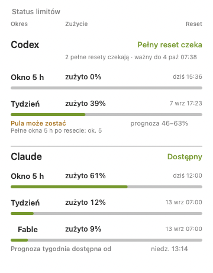

Alerty, które docierają, gdy nie ma Cię przy Macu.
Telegram i Slack, z trybem „tylko zdalnie": wiadomość idzie wtedy, kiedy nie siedzisz przy komputerze. Przy biurku dostajesz zwykły baner macOS, a nie wibrujący telefon w kieszeni.
Aplikacja w pasku menu macOS. Czyta dane o zużyciu, które Claude Code i Codex i tak zapisują na Twoim Macu, i mówi, kiedy odnowi się okno pięciogodzinne albo tygodniowe. Bez konta, bez serwera, nic nie wychodzi z komputera.
Apple Silicon, macOS 11 albo nowszy. W trakcie bety za darmo.
Jesteś w połowie zadania. Claude Code przestaje działać i mówi, żeby spróbować później. Od tej chwili masz dwie kiepskie drogi: sprawdzać co chwilę albo odejść i dowiedzieć się godzinę za późno, że limit już wrócił.
Godzina resetu nie jest tajemnicą. Claude Code i Codex zapisują ją w plikach na Twoim komputerze. Tylko nikt tych plików nie czyta i nikt Ci o tym nie mówi.
Powiadomienie w momencie resetu, nie kolejny panel do otwierania. Alert jest zaplanowany przez systemowy mechanizm launchd, więc przeżywa restart i wylogowanie, a po odpaleniu sam się kasuje. Kliknięcie otwiera właściwą aplikację.
Mówi, przy czym Cię przerwało. Gdy limit Claude się kończy, aplikacja zapamiętuje, w których projektach pracowałeś w ostatnie 30 minut, i dopisuje je do wiadomości po resecie. Wracasz do nazwy projektu, nie do pustego ekranu.
Dwie kropki w pasku menu. Jedna dla Codeksa, druga dla Claude, kolor zależy od tego, ile okna zostało, obok godzina resetu.

Telegram i Slack, z trybem „tylko zdalnie": wiadomość idzie wtedy, kiedy nie siedzisz przy komputerze. Przy biurku dostajesz zwykły baner macOS, a nie wibrujący telefon w kieszeni.
Dostawcy podnoszą limity na weekend albo ogłaszają promocję na blogu lub w kanale RSS. Aplikacja skanuje oficjalne źródła i mówi Ci o tym. Linki z Reddita i X idą osobno, oznaczone jako niepotwierdzone.
Polecenie doctor pokazuje, co jest zepsute. Samonaprawa robi bezpieczne rzeczy sama, jeśli ją włączysz. Eksport diagnostyki daje raport bez żadnych sekretów, więc możesz mi go po prostu wysłać.
Nie ma konta do założenia, serwera, do którego coś leci, ani telemetrii. Aplikacja czyta lokalne pliki. Token Telegrama i webhook Slacka trafiają do Pęku kluczy macOS, zaszyfrowane, bez kopii w zwykłym pliku.
Wypisane wprost, żebyś dowiedział się tutaj, a nie po instalacji.
AI-limit-watcher.app do folderu Programy.xattr -cr /Applications/AI-limit-watcher.app i uruchom ponownie.Aplikacja siedzi w pasku menu i nigdy nie pojawia się w Docku. Żeby ją usunąć, przeciągnij do Kosza.
Czy coś wysyła? Nie. Za tą aplikacją nie stoi żaden serwer ani konto. Na zewnątrz idzie tylko to, co sam włączysz: wiadomość na Telegram albo Slack, którą skonfigurowałeś, i skaner ogłoszeń pobierający publiczne strony.
Czy dotyka moich kluczy API? Nie. Nigdy nie czyta ani nie zapisuje danych logowania. Jedna opcjonalna funkcja (dokładne procenty dla Claude) czyta token, który Claude Code i tak trzyma w Pęku kluczy, a macOS za każdym razem pyta Cię o zgodę. Domyślnie jest wyłączona.
Co przechowuje? Godziny resetu, procenty i Twoje ustawienia, w jednym pliku w katalogu domowym. Możesz go skasować i stracisz tylko historię.
Zrobiłem to narzędzie dla siebie. Żeby stało się produktem, który mogę utrzymywać, muszę zapłacić Apple 99 dolarów rocznie za podpisanie aplikacji, zanim ktokolwiek zapłaci mi cokolwiek. Dlatego pytam przed wydaniem tych pieniędzy, a nie po. Wybierz kwotę. Kosztuje Cię jedno kliknięcie i jest jedyną odpowiedzią, której naprawdę potrzebuję.